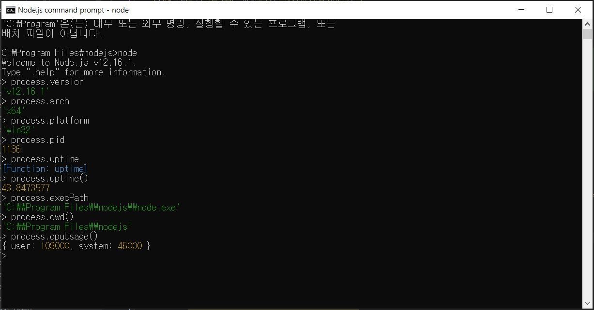

아직까지는 process 객체를 사용할 일이 많지 않았지만, 책의 후반부로 갈수록 사용할 일이 늘어납니다.
process 객체는 현재 실행되고 있는 노드 프로세스에 대한 정보를 담고 있습니다.
process 객체 안에는 다양한 속성이 있는데, REPL에 하나씩 따라서 입력해봅시다.
결과값은 사용자의 컴퓨터마다 차이가 있을 수 있으므로 이 책의 값과 다르더라도 걱정하지 마세요.

process.version // 설치된 노드 버전을 알 수 있습니다.
process.arch // 프로세서 아키택처 정보입니다. arm, ia32 등의 값일 수도 있습니다.
process.platform // 운영체제 플랫폼 정보입니다. linux나 darwin, freebsd 등의 값일 수도 있습니다.
process.pid // 현재 프로세스의 아이디입니다. 프로세스를 여러 개 가질 때 구분할 수 있습니다.
process.uptime() // 프로세스가 시작된 후 흐른 시간입니다. 단위는 초입니다.
process.execPath // 노드의 경로입니다.
process.cwd() // 현재 프로세스가 실행되는 위치입니다.
process.cpuUsage() // 현재 cpu 사용량입니다.
이 정보들의 사용 빈도는 그리 높지 않지만, 일반적으로 운영체제나 실행 환경별로 다른 동작을 하고 싶을 때 사용합니다.
process.env와 process.nextTick, process.exit()은 중요하므로 따로 설명하겠습니다.